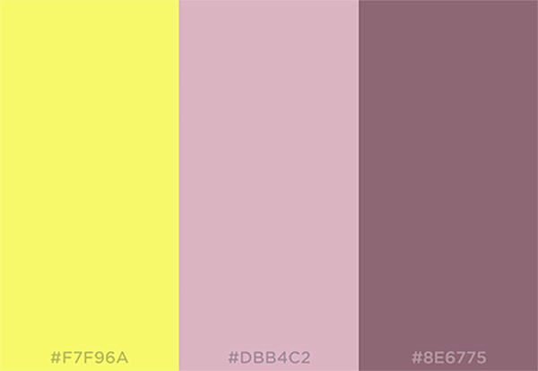

Color Scheme
The primary color will be pink #DBB4C2.
The secondary color will be dark pink #8E6775.
The accent color will be yellow #F7F96A.
Since the majority of they website's audience will be women, I wanted it to have a more feminine color scheme, so I went with the pink and dark pink. They pair really well with the accent yellow color. The yellow matches the logo and really pops out on the rest of the site. The yellow reminds me of yellow weather accessories like boots and umbrellas.